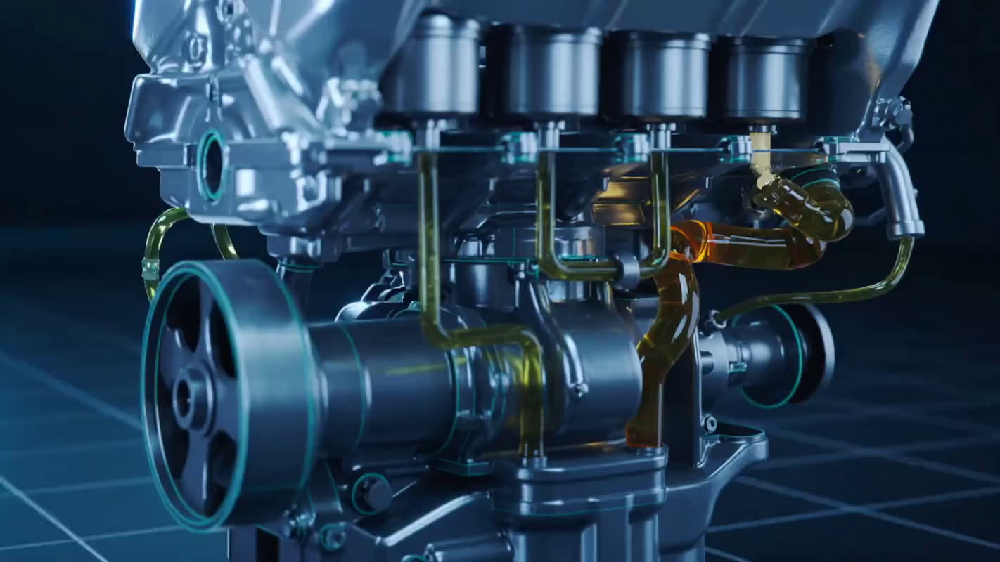

Lubrificação real
Cria uma película entre pistões, bielas e comando. Sem ela, é metal raspando em metal a cada quilômetro.
O Iranilton confere seu óleo em minutos, antes que um problema simples de hoje vire motor fundido amanhã.

anos de estrada cuidando de motor em Araguaína
Sem hora marcada. Encostou, foi atendido.
Troca na sua frente, óleo e filtro.
Carro e moto, de toda marca.
Ele circula por todas as peças internas o tempo todo. Quando está velho, cada uma dessas funções falha em silêncio.

Cria uma película entre pistões, bielas e comando. Sem ela, é metal raspando em metal a cada quilômetro.
Carrega as partículas metálicas do próprio desgaste até o filtro, mantendo o motor limpo por dentro.
Forma uma barreira contra oxidação, o inimigo de motores mal cuidados ou parados por muito tempo.
Leva o calor para longe das peças. Motor que roda frio dura mais, gasta menos e passa menos tempo na oficina.
Óleo em dia não é luxo. É o item mais barato que existe para proteger o motor mais caro que você tem.
Nenhum motor funde do dia para a noite. Antes, ele dá sinais, e quase todo motorista só repara quando já é tarde.
O alerta mais direto que existe: nível ou qualidade do óleo já comprometidos.
Um tique-taque vindo do motor indica que o óleo não lubrifica mais como deveria.
Fumaça preta ou azulada costuma ser óleo queimando dentro do motor.
Pode ser consumo excessivo ou vazamento. Os dois pedem atenção agora.
Reconheceu algum desses sinais? Conte para o Iranilton pelo WhatsApp antes que o motor avise de um jeito bem mais caro.
Informe a quilometragem e o tipo de óleo. Em segundos você vê quanto da vida útil do óleo já foi.
Referência geral de mercado. O intervalo certo depende do manual do seu veículo, e o Iranilton confirma na hora.
Do momento em que você encosta até sair rodando, tudo acontece na sua frente.
Sem hora marcada. É só encostar na Avenida Cônego João Lima, na Vila Rosário.
Nível, aspecto e o que o seu carro está pedindo, antes de trocar qualquer coisa.
Troca feita na sua frente, com o óleo certo para o seu modelo.
Motor lubrificado, limpo por dentro e uma preocupação a menos.
Não é rede, não é um atendente diferente a cada visita. É negócio de bairro, tocado por quem está atrás do balcão todos os dias.
São mais de 40 anos de estrada. Nesse tempo, o Iranilton já atendeu carro de praticamente toda marca que roda por Araguaína, de motor pequeno a motor grande. E também faz a troca de óleo da sua moto.
Fica na Vila Rosário, pertinho de quem mora e trabalha na região.
Passe na TI Troca de Óleo ou chame o Iranilton antes de rodar mais um quilômetro sem saber como está o seu óleo.
Chamar no WhatsApp